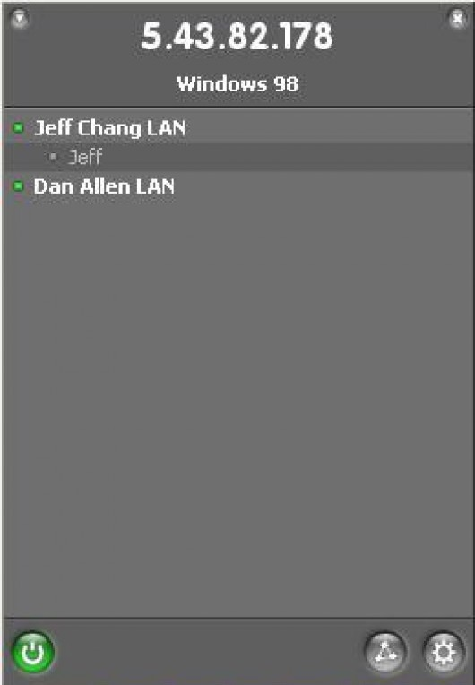
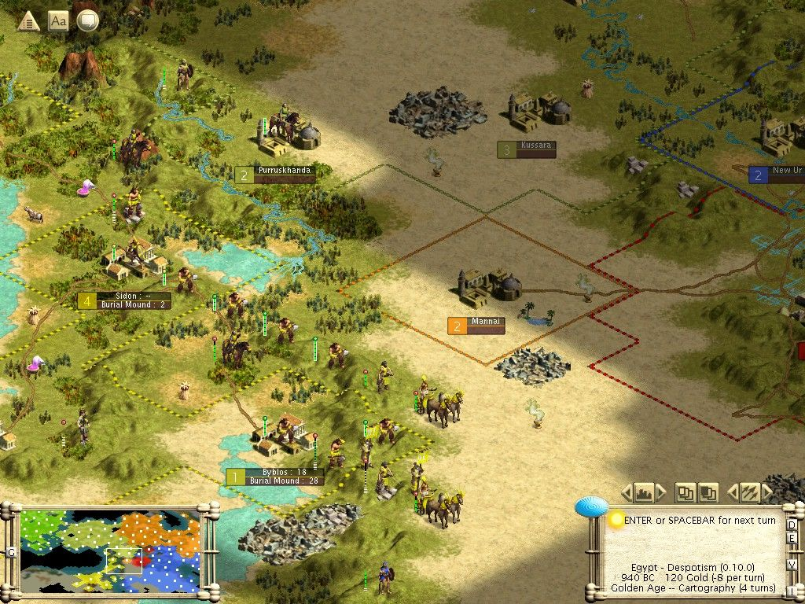
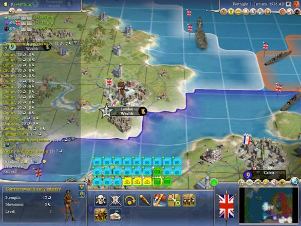
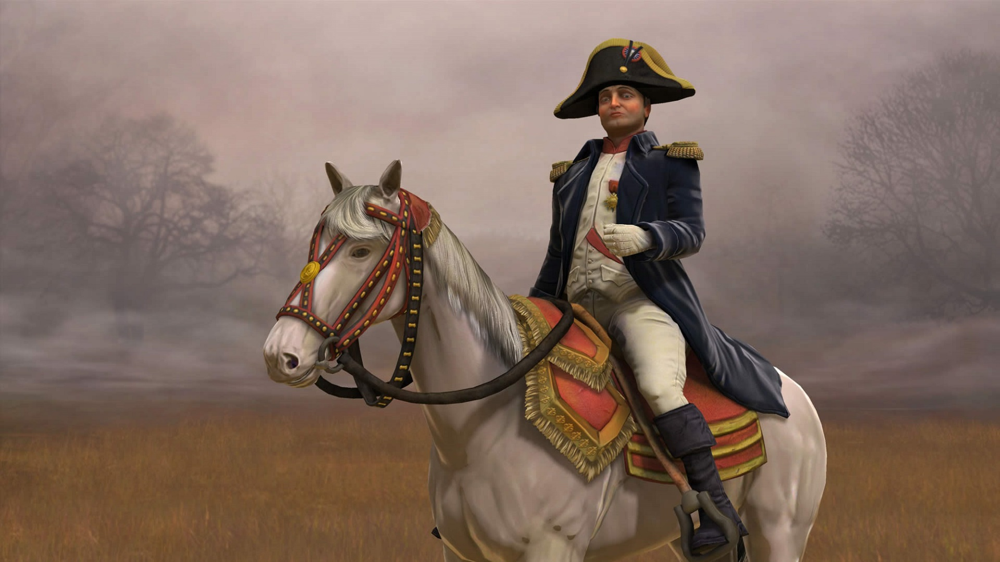
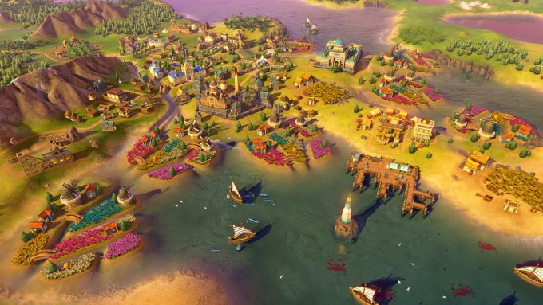

Hã... eu disse online? Desculpe, naquela época, internet era somente para coisas sérias. Não havia Google em português, por exemplo. O multiplayer era local e exigia que os computadores estivessem na mesma rede cabeada, porque não existia wifi. Jogar online, naquela época, exigia uma gambiarra chamada Hamachi, cuja única função era simular uma rede local através da internet. Evidentemente que não era um modo muito popular, dados os obstáculos.
Qual não foi nossa surpresa, portanto, quando o Civilization III foi lançado sem nenhum multiplayer? Não deixe a falsificação dos registros históricos lhe enganar: Civ III foi um fracasso de lançamento. A fórmula baseada em expansão ilimitada privilegiava a agressão gratuita desde o primeiro turno do jogo. Para ter uma ideia, joguei uma única vez no modo Deity ("divindade") e fui atacado e destruído no 5º turno pelos chineses, antes mesmo que tivesse terminado minha primeira unidade. Além disso, houve centenas de falhas de programação que tiveram de ser corrigidas às pressas para dar tempo do jogo receber os prêmios de Jogo do Ano. A maoria, porém, só veio com a primeira expansão, Play The World, que era basicamente um pacote contendo o maldito multiplayer, as correções de bugs e meia dúzia de mapas e civilizações novas. A redenção do Civ III foi a segunda expansão, Conquests!, que marcou a volta de Sid Meier à gerência de design após ter rompido relações com a empresa. Sid trouxe mudanças que já estavam presentes em seus jogos de outras franquias, como a impensável habilidade de mover mais de uma unidade ao mesmo tempo. Num jogo com centenas de unidades frequentemente reunidas no mesmo espaço do tabuleiro, o atalho Ctrl+X era a diferença crucial entre a diversão e o colapso nervoso. Sid também inseriu as formas de governo fascismo (altamente eficiente, facilitava a defesa de nações pequenas e especializadas em tempos de guerra) e feudalismo (bastante situacional, mas fazia o papel de transição entre a monarquia e o fascismo/comunismo para nações muito militaristas), que quebravam o domínio absoluto da república na antiguidade e da dupla democracia/comunismo na modernidade. Subitamente, o caminho único de destruir todos os inimigos para vencer não era mais tão fácil de ser executado, sobretudo no multiplayer. Passados os ajustes do lançamento (quando o fascismo era mais poderoso que todas as demais formas de governo), a democracia era claramente mais eficiente, mas custosa de se manter em período de guerra, o que significa que todos os jogadores dispostos a ganhar o jogo na base da porrada precisavam migrar para o fascismo (em nações especializadas) ou para o comunismo (em nações imensas). Como a migração levava 5 turnos, causava anarquia e todo mundo tinha acesso à espionagem a esta altura do jogo, todos os jogadores sob a democracia preparavam-se para a guerra a toque de caixa. Uma vantagem da democracia sobre as variações do totalitatismo era a possibilidade de apressar unidades militares com dinheiro, de forma que mísseis não precisavam ser estocados: uma vez rica o suficiente, uma nação poderia simplesmente comprá-los toda rodada e dispará-los sem pagar manutenção a mais por isso.
Claro que a vitória por dominação militar ainda era comum, mas era uma estratégia arriscada e que exigia execução cuidadosa. Os aztecas, iroqueses e zulus, por exemplo, eram famosos pelo early rush, quando o jogador sacrificava completamente seu desenvolvimento em prol de um exército forte o suficiente para saquear a nação mais próxima, já que estas nações possuíam unidades militares especiais que eram mais fortes ou mais rápidas que as dos concorrentes. Uma vez atingida a república, a vantagem militar destas nações tornava-se obsoleta. A partir daí, somente um punhado de nações possuía unidades especiais suficientemente poderosas para vencerem por dominação: vikings com seus Berserks, persas e seus Immortals, alemães e seus Panzers, e - não podia faltar - otomanos e seus Sipahi. Estes últimos eram unidades ofensivas montadas a cavalo com poder de fogo suficiente para derrubar paraquedistas modernos, exceto que ficam disponíveis ainda na Idade Média. Otomanos que estivessem com a vantagem ao descobrirem a Tradição Militar eram capazes de bancar uma guerra mundial contra todas as demais civilizações simplesmente porque a única unidade capaz de lhes interceptar demoraria mais uma centena de turnos para ser inventada. As unidades navais especiais eram mais fracas, mas também permitiam vitória militar a alguns povos. Bizantinos e seus Dromons dominavam os mares na antiguidade, mas os únicos a conseguirem vencer efetivamente com seus navios eram os ingleses e seus Men-O-War. No papel, não era tão mais forte que seus concorrentes. Na prática, porém, a capacidade única de "escravizar" seus adversários era uma carta na manga que pegava muitas marinhas desprevenidas. Ao derrubarem uma embarcação inimiga, os Men-O-War tinham 33% de chance de se clonarem ali mesmo, em plena arena de batalha, o que dava à Inglaterra a estranha capacidade de sair das batalhas com mais unidades do que quando entrou. Civilization III Conquests! foi popular por mais de uma década, e até hoje tem campeonatos com jogadores dedicados em todo o mundo. O multiplayer online era feito pelo GameSpy, um software horroroso que parecia atrair trapaceiros e bots para nossas partidas. No final das contas, terminávamos usando o Hamachi mesmo. Só que, como os jogos passaram a durar muitas horas (a maioria durava mais de 24 horas), reunir todos os jogadores humanos para retornar à sessão era uma tarefa hercúlea, de modo que a maioria das partidas que participei não terminava. A solução para isso era tão pitoresca que escrevi este texto inteiro só para poder falar dela: nós jogávamos Civilization III por email. Não, você não leu errado. Numa época em que os computadores brasileiros eram ruins e as conexões à internet, ainda piores, o próprio jogo oferecia a possibilidade de jogar um único turno e passar o arquivo do save adiante.
PBEMs (play by e-mail, como eram chamados) não só permitiam aos jogadores tanto tempo quanto quisessem para planejarem suas jogadas, como oferecia a oportunidade de se construir diários de jogo, onde as histórias eram contadas como se fossem RPGs épicos de conquista geopolítica. Infelizmente, o fórum do Civ Brasil (onde eu jogava com os desconhecidos da internet) saiu do ar, mas o do CivFanatics permanece ativo até hoje. Mas não sinto saudades, não. Talvez o único defeito do Civ III era a duração longa demais dos jogos, e não era o PBEM que iria resolvê-lo. Foi com este objetivo que o Civilization IV iniciou a tendência de limitar severamente a expansão dos países, que permenece firme e forte até hoje. Para início de conversa, colocar mais de uma unidade militar por quadrado do tabuleiro é impossível, o que, por si só, já desestimula a criação de exércitos imensos, uma vez que é bem desagradável ter de movê-los pelo mapa um a um. Mas, em cima disso, a arrecadação e os custos de manutenção passaram a piorar quanto maior o império, o que é um paradoxo weberiano que até hoje, doze anos depois, ainda me é difícil de engolir. Os custos deveriam diminuir com a escala, e não aumentar. Sei que um jogo não precisa guardar nenhuma similaridade com a realidade, mas sair de um jogo de centenas de soldados para outro de uma ou duas dúzias não merecia o nome de "sequência". O custo por unidade em excesso também aumentou violentamente, o que teria sido uma forma menos incômoda de lidar com o problema do que punir o estilo expansionista. O resultado, no entanto, foi o oposto: agora que as nações não podem mais se expandir ou defender adequadamente, as guerras tornaram-se mais relevantes do que nunca. Já que não há mais centenas de soldados e dezenas de cidades no caminho da aniquilação, é mais fácil convencer os colegas a se juntarem contra um adversário comum, especialmente se ele estiver tentando vencer por um meio não-violento.
(In)felizmente, o marketing acertou até mesmo nos detalhes mais sórdidos e a Firaxis Games terminou o ano com a prateleira repleta de troféus, incluindo "Melhor jogo de PC" (IGN, GamesSpot, GameSpy, CGM), "Melhor jogo de estratégia" (IGN, GameSpot) e "Melhor jogo do Ano" (GameSpy). O pior é que é fácil de entender os motivos. Depois das falhas de lançamento em Civ III, o jogo foi lançado com um patch estável, multiplayer online nativo e sem gambiarras, IA incrivelmente melhorada, gráficos em 3D (até então, todos os jogos da série haviam sido em 2D), e o eterno Spock de Jornada nas Estrelas (Leonard Nimoy) dublando os menus do jogo. Após anos lutando com o editor horroroso de mapas do Civ III Conquests!, a adição de um kit de desenvolvimento completo com dados estruturados em HTML, Python 2 como linguagem padrão dos scripts, e documentação completa e embutida no próprio kit provocou uma inundação de mods fantásticos, disponibilizados gratuitamente na internet pelos próprios usuários. Se em Civ III, jogar em português só era possível com uma cópia pirata do jogo, Civ IV exigia só um par de arquivos mais leves que uma música em MP3.
Civilization V é um jogo de Estratégia por turnos, onde cada jogador representa um líder de uma certa nação ou civilização, e precisa guiar o crescimento deste durante milhares de anos. O jogo começa com a fundação de uma pequena e primitiva cidade, e termina após o jogador alcançar uma das condições de vitória - ou sobrevivendo até o número de turnos acabar, onde a civilização que tiver mais pontos, baseado em diversos fatores, é declarada a vencedora. Durante um turno, o jogador precisa administrar unidades que representam civis e militares, mandando-os realizar diversas atividades, como: explorar novas terras, fundar cidades, batalhar contra unidades inimigos, melhorar a terra, lidar com a diplomacia com outras civilizações, e direcionar o crescimento da tecnologia, cultura, e economia. As condições de vitória podem incluir: conquistar o mundo pela força, convencer outras civilizações por meio de diplomacia para virar o líder, criar a maravilha "Utopia Project" ("Projeto Utopia") adotando políticas sociais ou vencendo a corrida espacial.
Civilization VI é uma jornada de aprendizado constante, incessante e, muitas vezes, massacrante. Exige paciência, dedicação e uma visão estratégica aguçada, mas recompensa tudo isso com a mais profunda, interessante e vasta experiência de construção de civilizações já oferecida em um game de estratégia do gênero. Quando Civilization VI chegou em outubro de 2016, a Firaxis tinha uma ambição: remodelar o gênero 4X e torna-lo menos monolítico, de modo a forçar o jogador a sair do básico "eXplore, eXpand, eXploit, eXterminate" e cuidar melhor de suas civilizações. O sistema de distritos, que precisam ser bem planejados para manter seus cidadãos satisfeitos é um exemplo, e dependendo da nação, obrigatórios para facilitar os meios de alcançar uma modalidade de vitória específica, como cultural ou científica. O problema é que Civ VI implementou tudo de qualquer jeito e sem polimento. Cidades costeiras se beneficiam mais de distritos residenciais, as no interior serão mais bem-sucedidas com distritos de produção, mas uma vez tomada essa decisão, não é possível desfazê-la. Em partidas longas, mudanças forçadas pelos adversários podem prejudicar enormemente essas cidades, e por consequência a sua estratégia.
Presepadas homéricas, como cross-play entre Windows, macOS e Linux, recurso prometido no lançamento (e que incentivou muita gente a comprar o jogo de cara, eu incluso) e que só chegou mais de um ano depois são difíceis de perdoar, mas ao menos a Firaxis e a 2K reconhecem que ainda há muito espaço para melhorias e novidade
Um bom exemplo é o inesperado mapa Red Death, por enquanto exclusivo para computadores e que introduz uma campanha Battle Royale (sim, isso mesmo) em um cenário apocalíptico, com unidades e desafios exclusivos. Confuso? Sim. Curioso? Sem dúvida, mostra que estão experimentando coisas novas.
Copyright ©2021 Take-Two Interactive Software, Inc.
Trademarks belong to their respective owners.
All rights reserved.